<meta charset=utf-8><style>body{background:#222;color:#eee;font:12px/1.4 sans-serif}main{display:grid;grid-template-columns:repeat(6,1fr);gap:6px;padding:8px}figure{margin:0}img{width:100%;height:120px;object-fit:cover;background:#333}figcaption{text-align:center;padding:2px 0}</style><main><figure>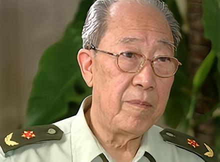<figcaption>吴孟超<br>wumengchao</figcaption></figure><figure>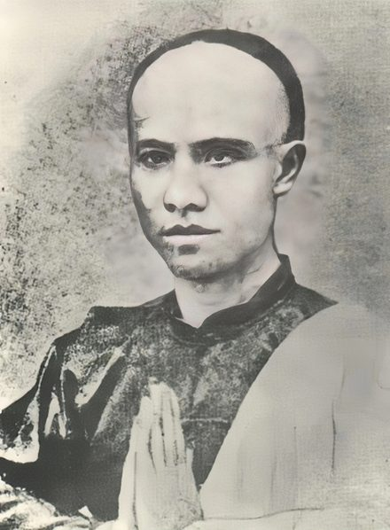<figcaption>谭嗣同<br>tansitong</figcaption></figure><figure>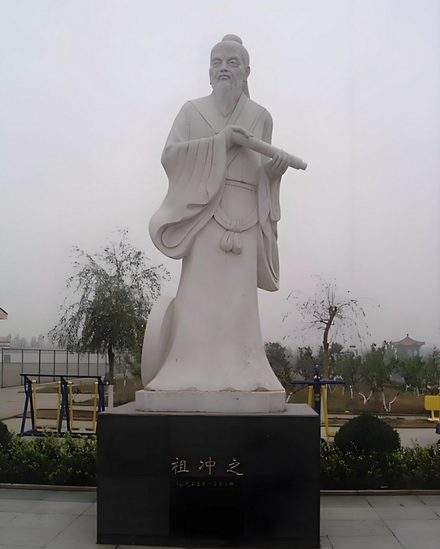<figcaption>祖冲之<br>zuchongzhi</figcaption></figure><figure>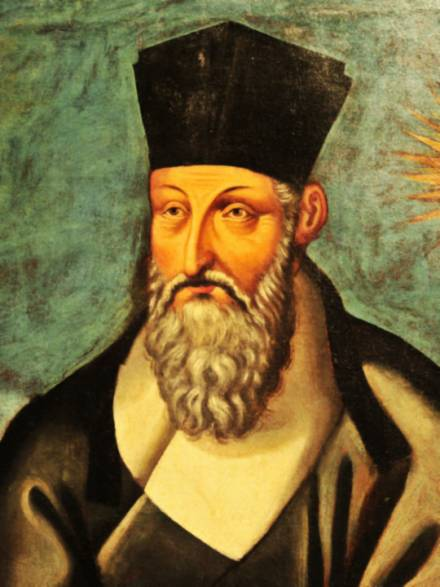<figcaption>利玛窦<br>limadou</figcaption></figure><figure>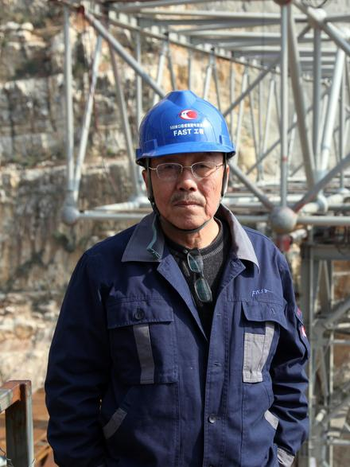<figcaption>南仁东<br>nanrendong</figcaption></figure><figure>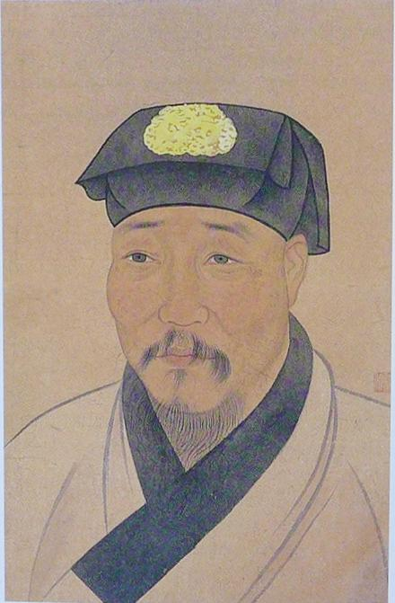<figcaption>徐渭<br>xuwei</figcaption></figure><figure>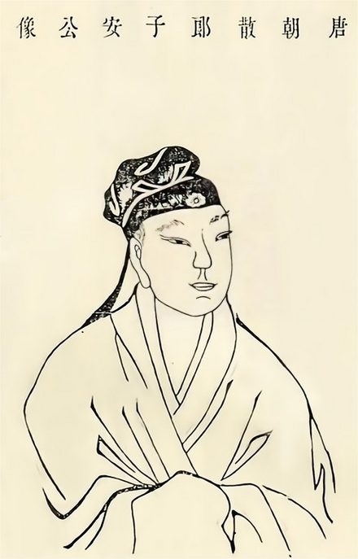<figcaption>王勃<br>wangbo</figcaption></figure><figure>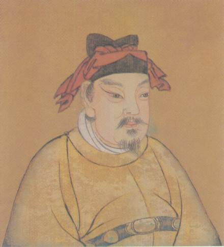<figcaption>曹彬<br>caobin</figcaption></figure><figure>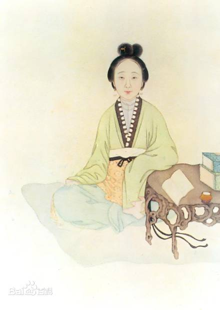<figcaption>陈圆圆<br>chenyuanyuan</figcaption></figure><figure>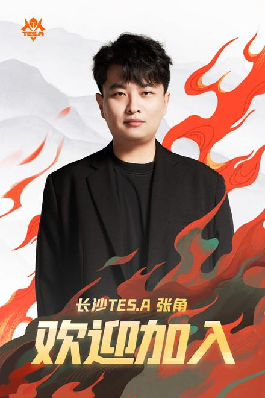<figcaption>张角<br>zhangjiao</figcaption></figure><figure>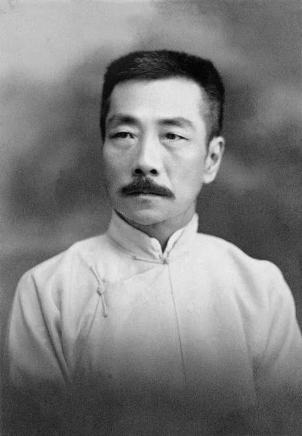<figcaption>鲁迅<br>luxun</figcaption></figure><figure>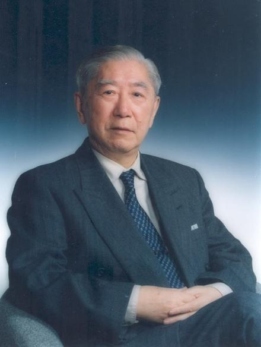<figcaption>吴自良<br>wuziliang</figcaption></figure><figure>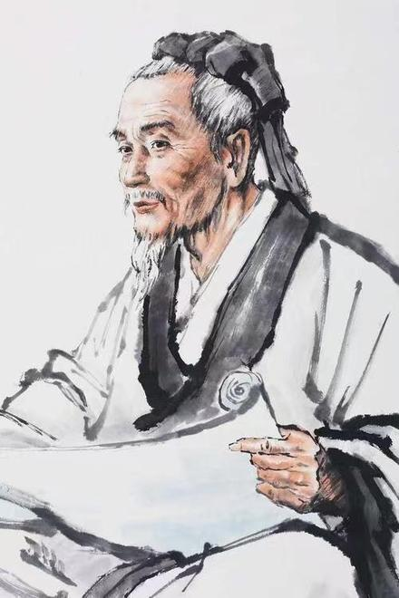<figcaption>张仲景<br>zhangzhongjing</figcaption></figure><figure>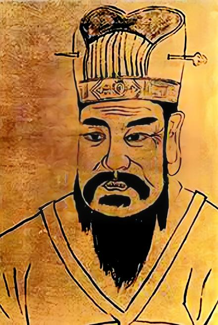<figcaption>王莽<br>wangmang</figcaption></figure><figure>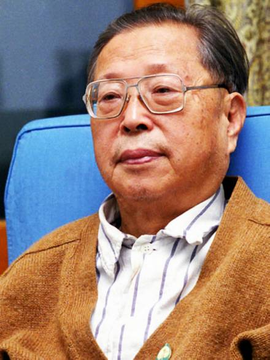<figcaption>曹禺<br>caoyu</figcaption></figure><figure>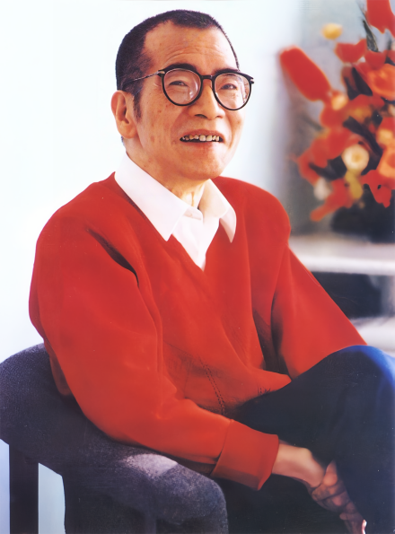<figcaption>陈景润<br>chenjingrun</figcaption></figure><figure>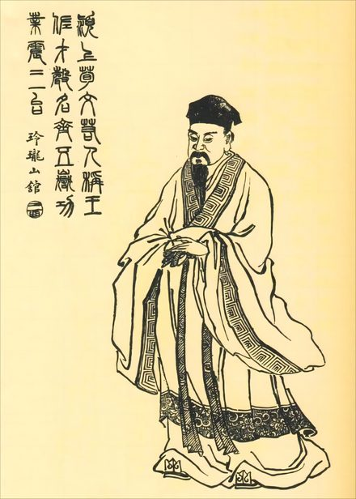<figcaption>荀彧<br>xunyu</figcaption></figure><figure>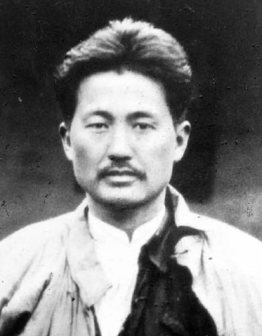<figcaption>方志敏<br>fangzhimin</figcaption></figure><figure>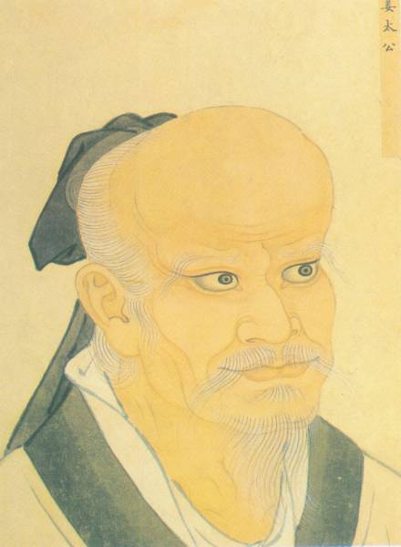<figcaption>姜子牙<br>jiangziya</figcaption></figure><figure>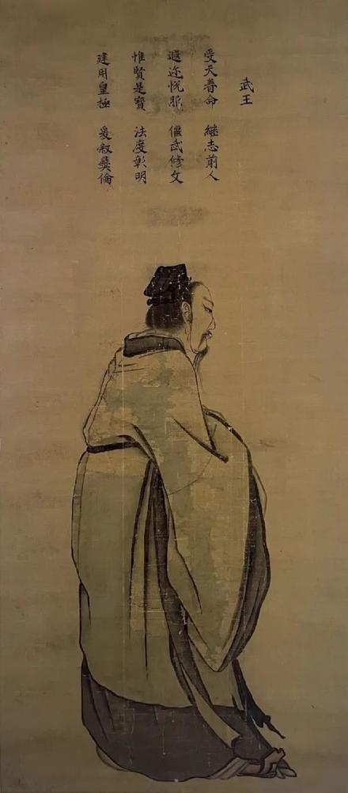<figcaption>周武王<br>zhouwu</figcaption></figure><figure>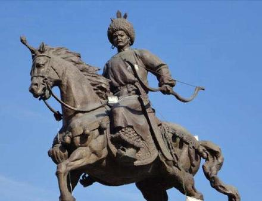<figcaption>耶律阿保机<br>yelvabaoji</figcaption></figure><figure><figcaption>任新民<br>renxinmin</figcaption></figure><figure>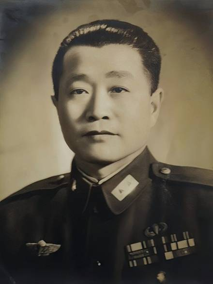<figcaption>杜聿明<br>du_yuming</figcaption></figure><figure>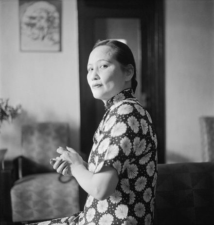<figcaption>宋庆龄<br>songqingling</figcaption></figure><figure>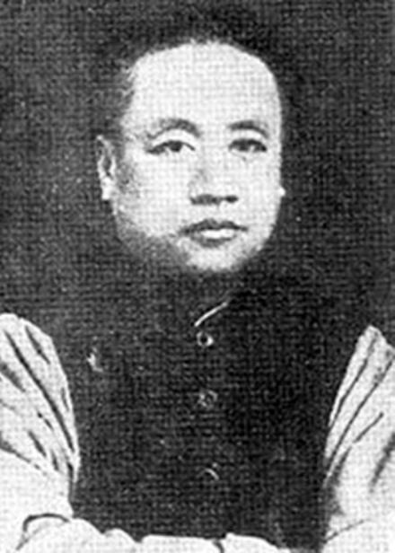<figcaption>蒲殿俊<br>pudianjun</figcaption></figure><figure>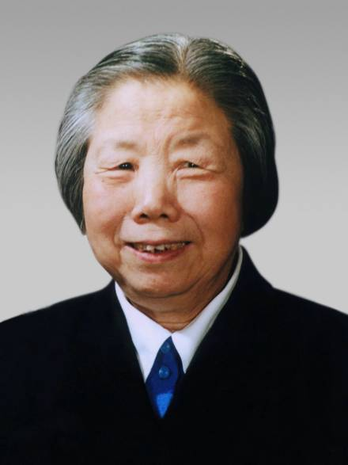<figcaption>邓颖超<br>dengyingchao</figcaption></figure><figure>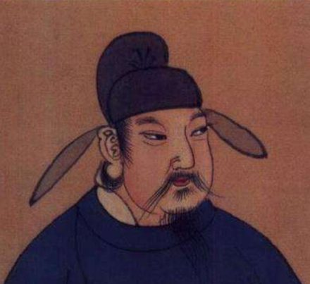<figcaption>唐玄宗李隆基<br>tangxuanzong</figcaption></figure><figure>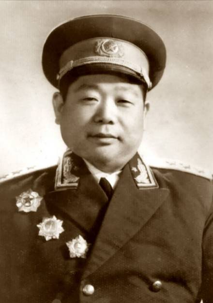<figcaption>陈锡联<br>chenxilian</figcaption></figure><figure>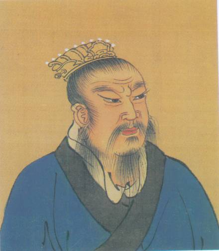<figcaption>刘邦<br>liubang</figcaption></figure><figure>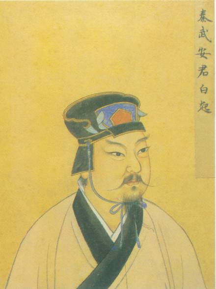<figcaption>白起<br>baiqi</figcaption></figure><figure>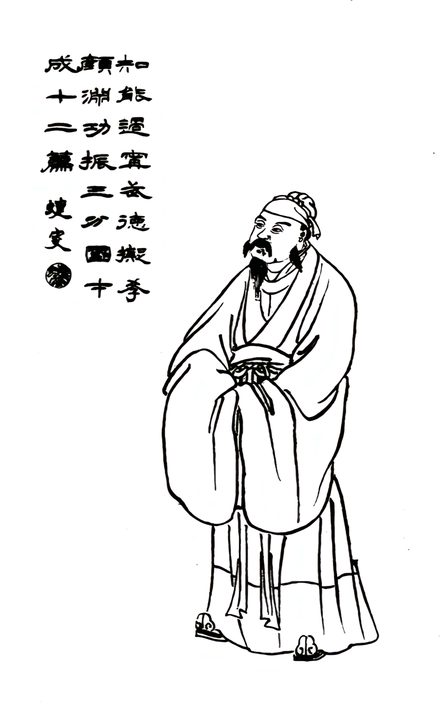<figcaption>许攸<br>xuyou</figcaption></figure><figure>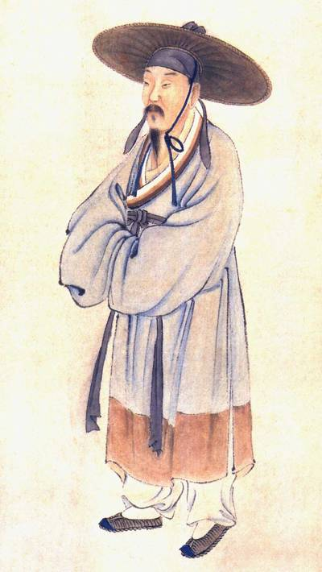<figcaption>陆游<br>luyou</figcaption></figure><figure>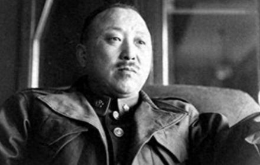<figcaption>卫立煌<br>wei_lihuang</figcaption></figure><figure>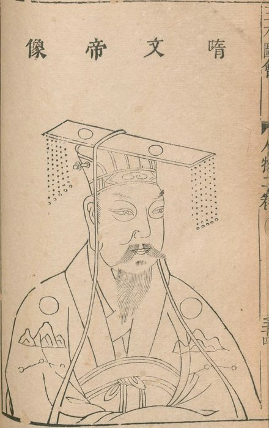<figcaption>隋文帝杨坚<br>yangjian</figcaption></figure><figure>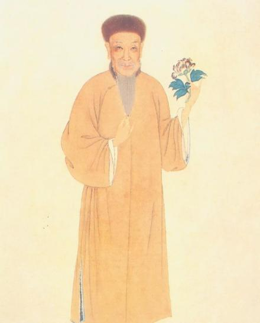<figcaption>袁枚<br>yuanmei</figcaption></figure><figure>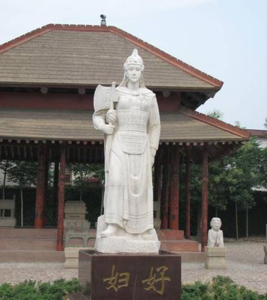<figcaption>妇好<br>fuhao</figcaption></figure></main>